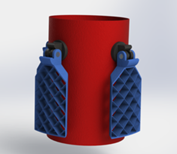

Design, Analysis, Assembly, and Test of a High-Powered Model Rocket
Senior Capstone Project, August 2020-Present
Pictured: The concept cross section of Andromeda, the team's rocket.
Pictured: The concept cross section of Andromeda, the team's rocket.
I am currently working on my Major Qualifying Project (MQP), WPI's senior capstone project. The eight person team that I am on is designing, analyzing, assembling and testing a high power model rocket. Our rocket, Andromeda, is more advanced than typical model rockets. After ascending to its apogee on a commercial composite solid rocket motor, the first stage and nose cone will be ejected and four grid fins will be deployed. Finally, it will undergo an actively stabilized decent before completing a propulsive landing using a second stage cold gas thruster.
A render of the length of airframe with the gridfins in the stowed position.
I am one of two team members focused on flight dynamics analysis. My focus for the year is to develop a 6 degrees of freedom vehicle dynamics simulator in MATLAB as well as to design and implement the control laws needed for decent and landing. I will likely also help out a bit with the aerodynamic load analysis in Ansys Fluent.
At this stage of the project, we have completed our preliminary research. I am currently working on developing the dynamical simulator. In addition to my primary tasks, I am designing the avionics bay and the avionics system that will run the control algorithm in flight.